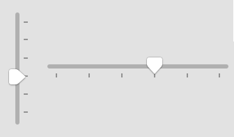
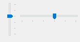
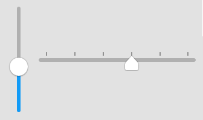
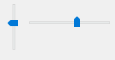

Slider Bar
The slider bar control, also known as track bar, is a window that consists of a bar with optional tick marks on it and a slider, also known as a thumb. Slider bars are useful when you want the user to select a discrete value or a set of consecutive values in a range. The user can modify the current position of the slider by tracking it or by clicking the mouse anywhere in the control's bar area. A click in the bar area modifies the control value by a page (see Remarks). On Windows, slider bars can have the keyboard focus. When a slider bar is focused, a focus rectangle appears around it and the user can modify the control value by pressing the Home, End, PageUp, PageDown and arrow keys.
A slider bar has a range and a current position. The range is the set of continuous values that the slider bar can represent. Because these values are expressed as short integers, the highest possible range and current position value is SHRT_MAX. The control itself uses the range and the current value to determine the pixel position of the slider.
There are two basic types of slider bars: horizontal and vertical. When you create a slider bar, DG automatically determines its orientation according to the specified horizontal and vertical sizes. If the horizontal size is greater than the vertical one DG creates a horizontal slider bar. In the opposite case DG creates a vertical slider bar.
A slider bar can optionally display tick marks. If tick marks are enabled, at least two tick marks are shown: one at each end, but there can be additional tick marks at regular intervals along the slider bar. The distance between tick marks is equal to the page size. Tick marks can be placed at both sides of the slider bars.
Item type
- DG_ITM_SLIDER
Subtypes
-
Subtype Meaning DG_SL_BOTTOMRIGHT The slider points to the bottom (horizontal sliders) or to the right (vertical sliders). If tick marks are enabled they are placed below or right to the slider bar, respectively.
 
DG_SL_TOPLEFT The slider points to the top (horizontal sliders) or to the left (vertical sliders). If tick marks are enabled they are placed above or left to the slider bar, respectively.
 
GRC Specification
Slider x y dx dy stepVal min max [sliderStyle]
where x and y are the pixel coordinates of the upper left corner of the slider bar, dx and dy are the width and height of the control in pixels. If stepVal is zero, the drawing of tick marks is disabled; otherwise the tick marks are enabled and stepVal defines the page size of the slider bar by the following formula: pageSize = (max - min) / stepVal (for details see Remarks). min and max specifies the initial range of the slider bar. The optional sliderStyle flag specifies the subtype of the slider bar. If this flag is omitted, by default the DG_SL_BOTTOMRIGHT subtype is set.
Possible values of sliderStyle:
-
Value Meaning BottomRight The DG_SL_BOTTOMRIGHT subtype is set. TopLeft The DG_SL_TOPLEFT subtype is set.
Messages
-
Message Meaning DG_MSG_CHANGE The position of the slider is changed. The message data parameter contains the previous position. DG_MSG_TRACK The position of the slider is changed during tracking. The message data parameter is the sub-message.
Modification Flag
DGSetItemValLong, DGSetItemMinLong and DGSetItemMaxLong functions can set the slider bar's modification flag except if they are called when handling the DG_MSG_INIT message in the dialog callback function. The flag can also be set by user actions that generate DG_MSG_CHANGE or DG_MSG_TRACK messages. Use DGModified or DGResetModified to retrieve or reset (clear) the state of the modification flag.
Remarks
The range of a slider bar can be specified not only in GRC. You can dynamically alter the range by using the DGSetItemMinLong and DGSetItemMaxLong functions. The possible minimum of the range is zero while the maximum is SHRT_MAX. Use DGGetItemMinLong and DGGetItemMaxLong to retrieve the range of a slider bar. The current position of the slider can be set and retrieved by DGSetItemValLong and DGGetItemValLong, respectively.
If any of the range or value setting functions is called, DG checks the consistency of data (i.e. whether the minimum <= value <= maximum condition is true or not). If data are inconsistent, DG automatically adjusts them. For the details of this adjustment see DGSetItemValLong, DGSetItemMinLong and DGSetItemMaxLong.
The position of the slider is derived from the current value based on the minimum and maximum value. The relative position is calculated using the following formula: relative position = (value - minimum) / (maximum - minimum). On Windows, if the minimum and maximum values are equal, the slider is placed at the beginning of the control. However, on Macintosh, the slider bar becomes disabled in this case.
If the user clicks and tracks the slider, or clicks and holds down the (left) mouse button in the control's bar area, or presses and holds down one of the direction keys when the slider bar has the keyboard focus, DG sends DG_MSG_TRACK messages to the dialog callback function until the user releases the (left) mouse button or the pressed key. With DG_MSG_TRACK message, a sub-message will be delivered also, which specifies the slider bar event more detailed. This allows the application to modify other controls during tracking. When handling DG_MSG_TRACK messages call DGGetItemValLong to retrieve the current value of the slider bar. As soon as tracking is finished the callback function receives a DG_MSG_CHANGE message; the message data parameter is the slider position before tracking. Note that every DG_MSG_CHANGE message is preceded by at least one DG_MSG_TRACK message.
When the user clicks in the bar area of a slider bar, or on Windows presses the PageUp or PageDown keys while the slider bar has the keyboard focus, the slider position is modified by the value of the page size. The page size is initialized from GRC by the following formula: pageSize = (maximum - minimum) / stepVal (stepVal must be greater than zero). When the range of the scroll bar is altered by DGSetItemMinLong or DGSetItemMaxLong, the pageSize value is automatically recalculated and the tick marks, if they are enabled, are redrawn according to this new page size. If stepVal is set to zero in GRC no tick marks are drawn. In this case the page size is not defined by DG, the slider bar uses the system default value.
Requirements
- Version: DG 2.0.0 or later
- Header: DG.h
See Also
Dialog item types
DGGetItemMaxLong, DGGetItemMinLong, DGGetItemValLong, DGModified, DGResetModified, DGSetItemMaxLong, DGSetItemMinLong, DGSetItemValLong, Callback functions
DG_MSG_CHANGE, DG_MSG_INIT, DG_MSG_TRACK